# Read the data
data <- read.csv("Data.csv", header=TRUE)Height Data Analysis
Analysis info
Looking at differences in soybean height based on Treatment (0:control or 1:tannins) over time. We included WAT (Week after application) as an additional predictor variable and Plot and Field as nested random effects.
Response Variable:
- Height (cm)
Predictor Variables:
- Treatment (0: Control, 1: Tannins)
- WAT (Week After Application: 1-4)
- Plot (1-20)
- Field (1-20)
Below is our process of fitting our data to the best possible model.
Initial Height Analysis
Loading and Sub setting Data
Reading in Data Source
Sub setting data to:
1) Only include values from plants that are exposed to browsing as opposed to those completely protected from browsing.
2) Convert predictor variables to factors with “levels”.
3) Remove rows with missing values (missing values = dead plant or sampling error).
# Subset to remove Enclosure values
data <- data[data$Enclosure == "0", ]
# Convert categorical variables to factors
data$Field <- as.factor(data$Field)
data$Plot <- as.factor(data$Plot)
data$Treatment <- as.factor(data$Treatment)
data$Enclosure <- as.factor(data$Enclosure)
# Remove rows with missing Height values
data <- data |>
filter(!is.na(Height))Exploratory Data Analysis
Calculating and Displaying mean soybean height for treatments across Weeks after application.
# Calculate mean Height for each Treatment and WAT combination
summary_data <- data |>
group_by(Treatment, WAT) |>
summarise(mean_height = mean(Height, na.rm = TRUE))`summarise()` has grouped output by 'Treatment'. You can override using the
`.groups` argument.# Subset to remove WAT values at week zero
summary_data <- summary_data[summary_data$WAT != "0", ]
# Displaying mean soybean height for treatments across Weeks after application
print(summary_data)# A tibble: 8 × 3
# Groups: Treatment [2]
Treatment WAT mean_height
<fct> <int> <dbl>
1 0 1 14.2
2 0 2 15.7
3 0 3 20.1
4 0 4 26.9
5 1 1 14.9
6 1 2 16.9
7 1 3 21.0
8 1 4 28.4Plotting “Mean Height by Treatment Over Time”
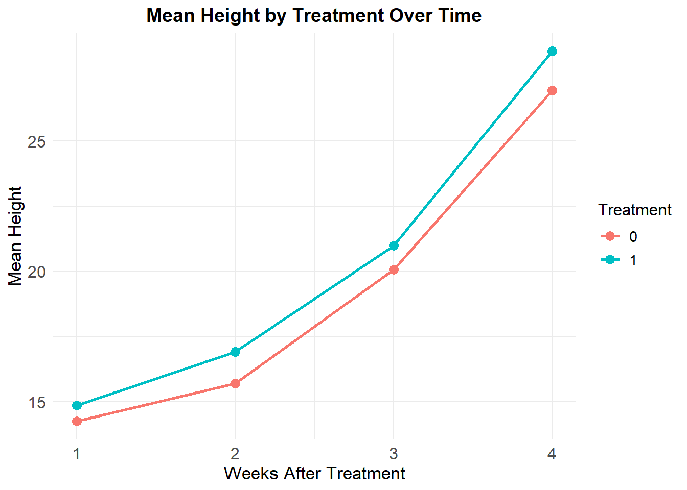
Box plot’s showing the distribution of height over time.
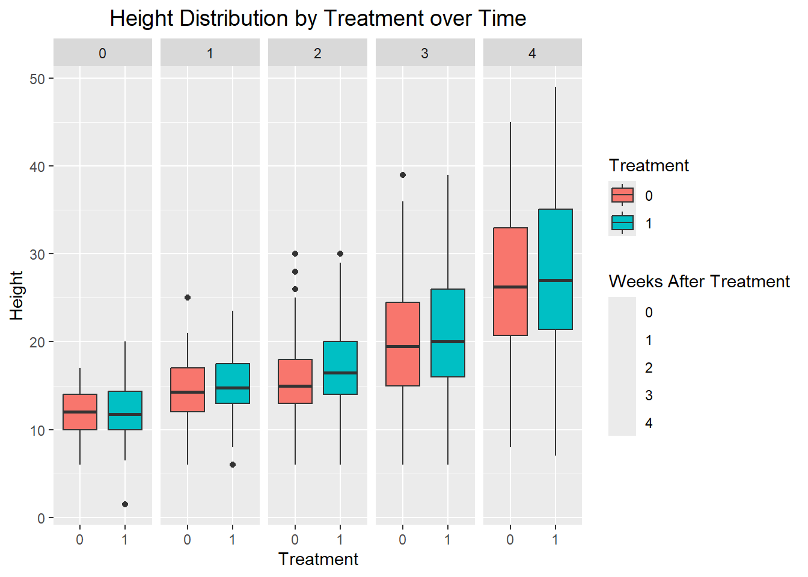
Removing Height Data from Week Zero
Measurements from week zero were taken as a baseline to show differences in height after tannins were applied. It should be excluded from analysis as measurements were taken before application of tannins and biases the results.
# Subset to remove Height values at week zero
data_subset <- data[data$WAT != "0", ]Plotting subset data
ggplot(data_subset, aes(x = factor(Treatment, levels = c(0, 1), labels = c("0%", "10%")), y = Height, fill = factor(Treatment, labels = c("0%", "10%")))) +
geom_boxplot() +
facet_wrap(~ WAT, nrow = 1) + # Facet in a single row
labs(
x = "Tannin Concentration",
y = "Soybean Height (cm)",
fill = "Tannin Concentration" # Update legend title
) +
# Create a dummy aesthetic for WAT to generate a second legend
geom_point(aes(color = factor(WAT)), alpha = 0) + # Invisible points to create the WAT legend
scale_color_discrete(name = "Weeks After Treatment") + # Legend for WAT
theme(
legend.position = "top",
plot.title = element_text(hjust = 0.5, size = 14, face = "bold"), # Center title and bold it
plot.margin = margin(t = 20, b = 20, l = 20, r = 20), # Increase space between the figure and the edges
axis.text.x = element_text(size = 12) # Adjust x-axis text size if necessary
)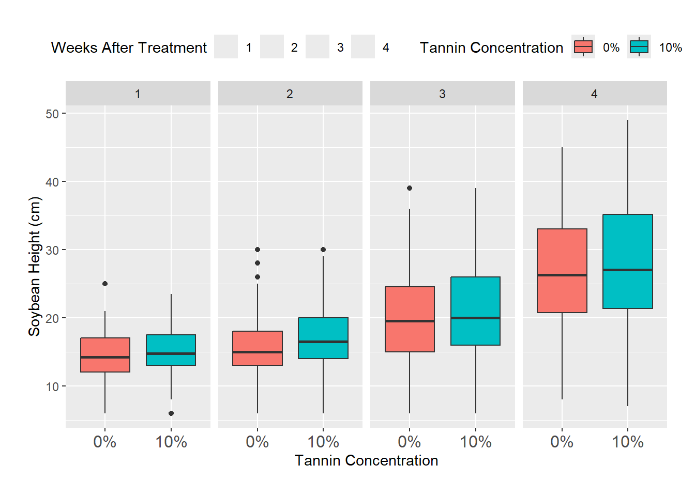
Simple Analysis
Fitting models for simple linear Regression
# Linear Regression for Height
# Null Model
lm_height_1 <- lm(formula = Height ~ Treatment, data = data_subset)
# Partial Model
lm_height_2 <- lm(formula = Height ~ Treatment * WAT, data = data_subset)
# Full Model
lm_height_3 <- lm(formula = Height ~ Treatment * WAT * Field, data = data_subset)Choosing the best model
#ANOVA for differences in models
anova(lm_height_1, lm_height_2, lm_height_3)Analysis of Variance Table
Model 1: Height ~ Treatment
Model 2: Height ~ Treatment * WAT
Model 3: Height ~ Treatment * WAT * Field
Res.Df RSS Df Sum of Sq F Pr(>F)
1 1164 75668
2 1162 48909 2 26759 446.462 < 2.2e-16 ***
3 1154 34583 8 14326 59.755 < 2.2e-16 ***
---
Signif. codes: 0 '***' 0.001 '**' 0.01 '*' 0.05 '.' 0.1 ' ' 1# AIC to pick the best model
AIC(lm_height_1, lm_height_2, lm_height_3) df AIC
lm_height_1 3 8180.427
lm_height_2 5 7675.589
lm_height_3 13 7287.457Model lm_height_3 has the lowest AIC score.
summary(lm_height_3)
Call:
lm(formula = Height ~ Treatment * WAT * Field, data = data_subset)
Residuals:
Min 1Q Median 3Q Max
-18.0967 -3.6639 -0.0277 3.3068 19.1187
Coefficients:
Estimate Std. Error t value Pr(>|t|)
(Intercept) 10.6635 1.1374 9.375 < 2e-16 ***
Treatment1 -0.7688 1.6086 -0.478 0.63277
WAT 4.7985 0.3932 12.203 < 2e-16 ***
Field2 -3.9803 1.8015 -2.209 0.02734 *
Field3 -4.2982 1.4427 -2.979 0.00295 **
Treatment1:WAT 1.1767 0.5561 2.116 0.03456 *
Treatment1:Field2 3.1266 2.5455 1.228 0.21959
Treatment1:Field3 1.5152 2.0454 0.741 0.45898
WAT:Field2 -1.7885 0.6242 -2.865 0.00424 **
WAT:Field3 0.1344 0.5002 0.269 0.78827
Treatment1:WAT:Field2 -1.4843 0.8811 -1.685 0.09232 .
Treatment1:WAT:Field3 -1.4172 0.7113 -1.992 0.04657 *
---
Signif. codes: 0 '***' 0.001 '**' 0.01 '*' 0.05 '.' 0.1 ' ' 1
Residual standard error: 5.474 on 1154 degrees of freedom
Multiple R-squared: 0.5448, Adjusted R-squared: 0.5405
F-statistic: 125.6 on 11 and 1154 DF, p-value: < 2.2e-16The Interaction between Treatment1 (Tannin application) and WAT (Week after Treatment) is significant at alpha = 0.05
Checking Model Assumptions
Using a QQ plot to look for non-normal distributions of the model’s plotted residuals
plot(lm_height_3)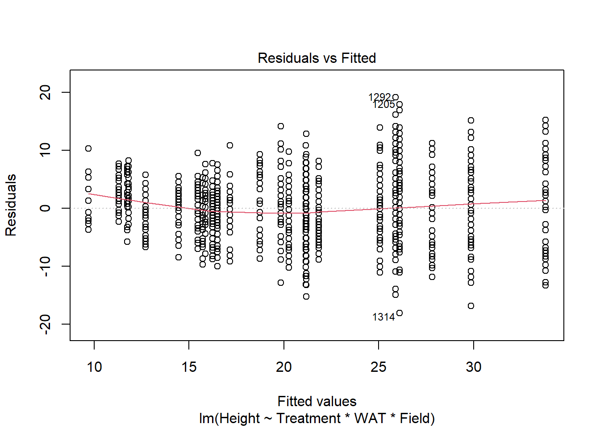
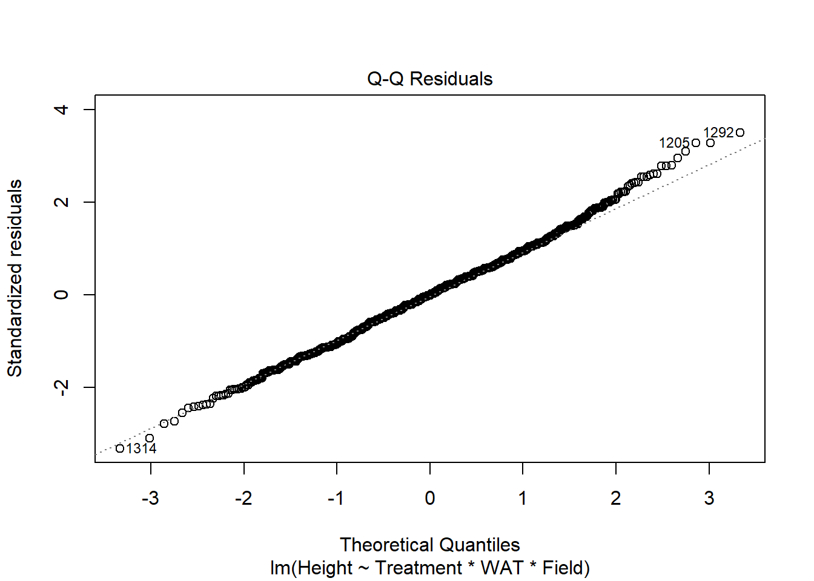
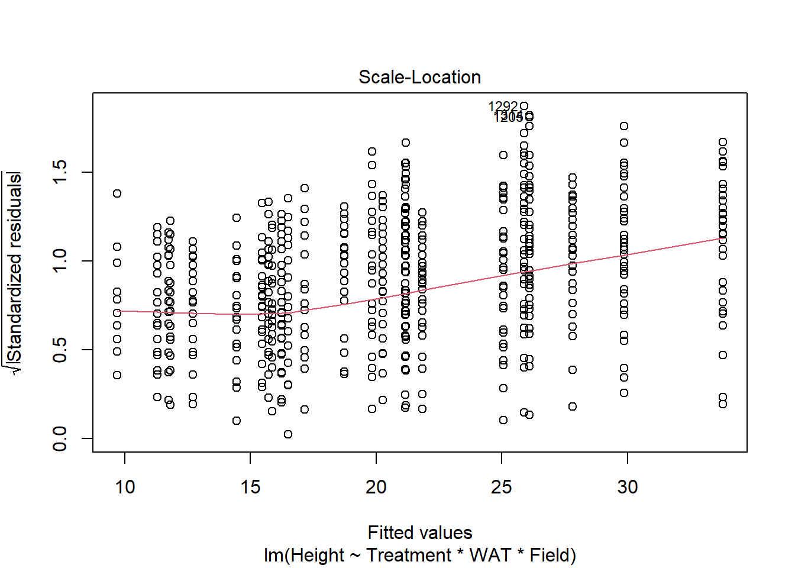
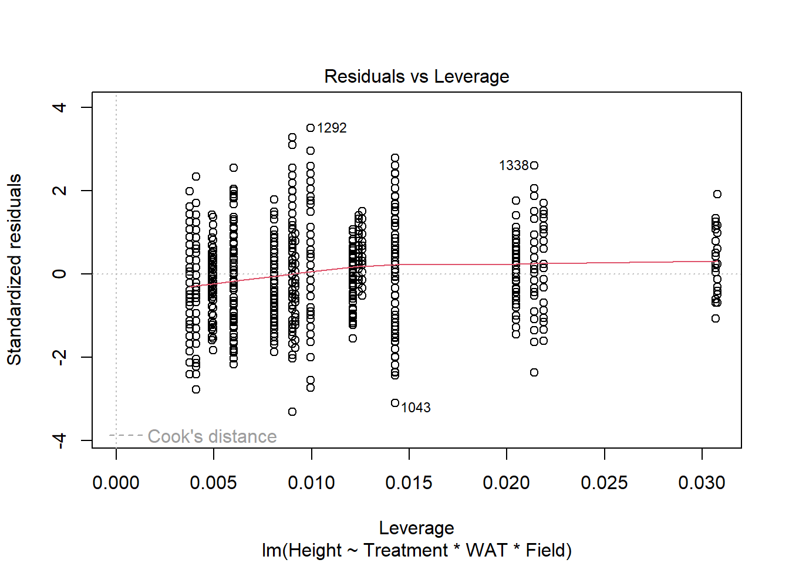
Looking at the plotted Q-Q Residuals, data does appear to be slightly non-normal. With the size of out data set, non-normality is probably fine
Also, I don’t believe that simple linear regression is appropriate model for out data. Because of the three fields design plan, we should switch the variable Field to a random factor to block the data.
A better fitting model will provide more accurate results.
Removal of outliers 1292, 1205, and 1314 may improve model fit. I’m unsure if this is correct because I only have 1166 observations in my dataset?
Continued Analysis with Model Adjustments
Removing outliers
# Does nothing because there are no corresponding values
data_subset <- data_subset[-c(1205, 1292, 1314), ]Mixed Effects Model
# Mixed-Effects Model for Height
# Null Model
mem_h_1 <- glmmTMB(Height ~ Treatment, data = data_subset)
# Partial Model 1
mem_h_2 <- glmmTMB(Height ~ Treatment * WAT, data = data_subset)
# Partial Model 2
mem_h_3 <- glmmTMB(Height ~ Treatment * WAT * Field, data = data_subset)
# Full Model with random effects for Field
mem_h_4 <- glmmTMB(Height ~ Treatment * WAT + (1 | Field), data = data_subset)
# Full Model with random effects for Field/Plot
mem_h_5 <- glmmTMB(Height ~ Treatment * WAT + (1 | Plot) + (1 | Field), data = data_subset)Model Comparison using ANOVA
# Compare models using likelihood ratio test
anova(mem_h_1, mem_h_2, mem_h_3, mem_h_4, mem_h_5)Data: data_subset
Models:
mem_h_1: Height ~ Treatment, zi=~0, disp=~1
mem_h_2: Height ~ Treatment * WAT, zi=~0, disp=~1
mem_h_4: Height ~ Treatment * WAT + (1 | Field), zi=~0, disp=~1
mem_h_5: Height ~ Treatment * WAT + (1 | Plot) + (1 | Field), zi=~0, disp=~1
mem_h_3: Height ~ Treatment * WAT * Field, zi=~0, disp=~1
Df AIC BIC logLik deviance Chisq Chi Df Pr(>Chisq)
mem_h_1 3 8180.4 8195.6 -4087.2 8174.4
mem_h_2 5 7675.6 7700.9 -3832.8 7665.6 508.838 2 <2e-16 ***
mem_h_4 6 7341.1 7371.5 -3664.6 7329.1 336.460 1 <2e-16 ***
mem_h_5 7 7251.0 7286.4 -3618.5 7237.0 92.145 1 <2e-16 ***
mem_h_3 13 7287.5 7353.3 -3630.7 7261.5 0.000 6 1
---
Signif. codes: 0 '***' 0.001 '**' 0.01 '*' 0.05 '.' 0.1 ' ' 1Model comparison using AIC
# AIC comparison
AIC(mem_h_1, mem_h_2, mem_h_3, mem_h_4, mem_h_5) df AIC
mem_h_1 3 8180.427
mem_h_2 5 7675.589
mem_h_3 13 7287.457
mem_h_4 6 7341.129
mem_h_5 7 7250.984Model comparison using BIC
# BIC comparison
BIC(mem_h_1, mem_h_2, mem_h_3, mem_h_4, mem_h_5) df BIC
mem_h_1 3 8195.611
mem_h_2 5 7700.895
mem_h_3 13 7353.254
mem_h_4 6 7371.497
mem_h_5 7 7286.414Summary of best fitted model!
# Full model with nested random effects
summary(mem_h_5) Family: gaussian ( identity )
Formula: Height ~ Treatment * WAT + (1 | Plot) + (1 | Field)
Data: data_subset
AIC BIC logLik deviance df.resid
7251.0 7286.4 -3618.5 7237.0 1159
Random effects:
Conditional model:
Groups Name Variance Std.Dev.
Plot (Intercept) 3.799 1.949
Field (Intercept) 13.273 3.643
Residual 27.755 5.268
Number of obs: 1166, groups: Plot, 20; Field, 3
Dispersion estimate for gaussian family (sigma^2): 27.8
Conditional model:
Estimate Std. Error z value Pr(>|z|)
(Intercept) 7.3838 2.2798 3.239 0.0012 **
Treatment1 0.6409 1.2204 0.525 0.5995
WAT 4.5028 0.2091 21.534 <2e-16 ***
Treatment1:WAT 0.1574 0.2978 0.529 0.5970
---
Signif. codes: 0 '***' 0.001 '**' 0.01 '*' 0.05 '.' 0.1 ' ' 1Best Fitted Model is the full model with nested random effects
Model Diagnostics
Extracting model residuals
# Extract residuals
residuals <- resid(mem_h_5)
fitted <- fitted(mem_h_5)
# Plot residuals vs fitted values
plot(fitted, residuals, xlab = "Fitted values", ylab = "Residuals",
main = "Residuals vs Fitted")
abline(h = 0, col = "red")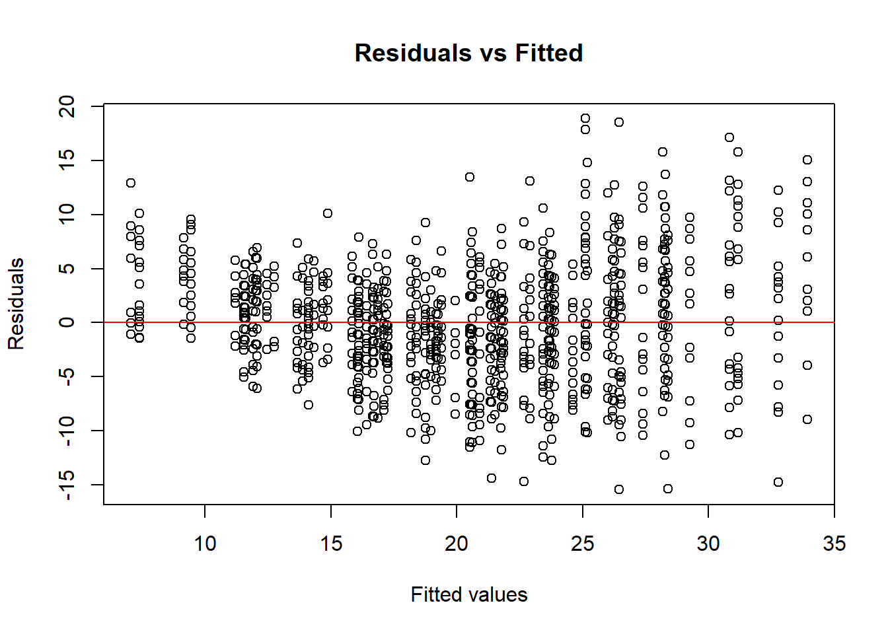
Plotted Model Residuals vs Fitted Residuals deviation from a straight line indicates departure from normality assumption.
This invalidates our model results.
Normality in Residuals
qqnorm(residuals)
qqline(residuals, col = "red")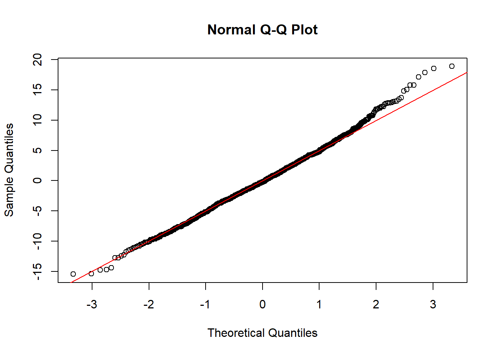
Deviation of Quantiles from a straight line at the ends indicate outliers.
A log transformation may better fit the data to out model and allow our data to meet our models normality assumption.
Response variable log transformation and further analysis
Mixed Effects Model with Log transformation
# Fit the mixed-effects model with log transformation on best model
mem_h_log <- glmmTMB(log(Height) ~ Treatment * WAT + (1 | Plot) + (1 | Field), data = data_subset)AIC comparison between log and non-log model
AIC(mem_h_5, mem_h_log) df AIC
mem_h_5 7 7250.9842
mem_h_log 7 245.2822BIC comparison
BIC(mem_h_5, mem_h_log) df BIC
mem_h_5 7 7286.4136
mem_h_log 7 280.7115Log transformed model has drastically lower AIC and BIC.
Summary of Best fitting model
summary(mem_h_log) Family: gaussian ( identity )
Formula: log(Height) ~ Treatment * WAT + (1 | Plot) + (1 | Field)
Data: data_subset
AIC BIC logLik deviance df.resid
245.3 280.7 -115.6 231.3 1159
Random effects:
Conditional model:
Groups Name Variance Std.Dev.
Plot (Intercept) 0.008978 0.09475
Field (Intercept) 0.035009 0.18711
Residual 0.068252 0.26125
Number of obs: 1166, groups: Plot, 20; Field, 3
Dispersion estimate for gaussian family (sigma^2): 0.0683
Conditional model:
Estimate Std. Error z value Pr(>|z|)
(Intercept) 2.290736 0.116332 19.691 <2e-16 ***
Treatment1 0.074067 0.059913 1.236 0.216
WAT 0.222732 0.010369 21.480 <2e-16 ***
Treatment1:WAT -0.008018 0.014769 -0.543 0.587
---
Signif. codes: 0 '***' 0.001 '**' 0.01 '*' 0.05 '.' 0.1 ' ' 1No model significance between treatment with tannin and height variable, but a positive influence.
Statistical Significance for Week After Treatment. This is to be expected during these growth stages
No model significance between tannin treatment and Week After Application, but a positive influence.
Log Transformed Model Diagnostics
Extracting model residuals
residuals_log <- resid(mem_h_log)
fitted_log <- fitted(mem_h_log)
# Plot residuals vs fitted values
plot(fitted_log, residuals_log, xlab = "Fitted values", ylab = "Residuals",
main = "Residuals vs Fitted")
abline(h = 0, col = "red")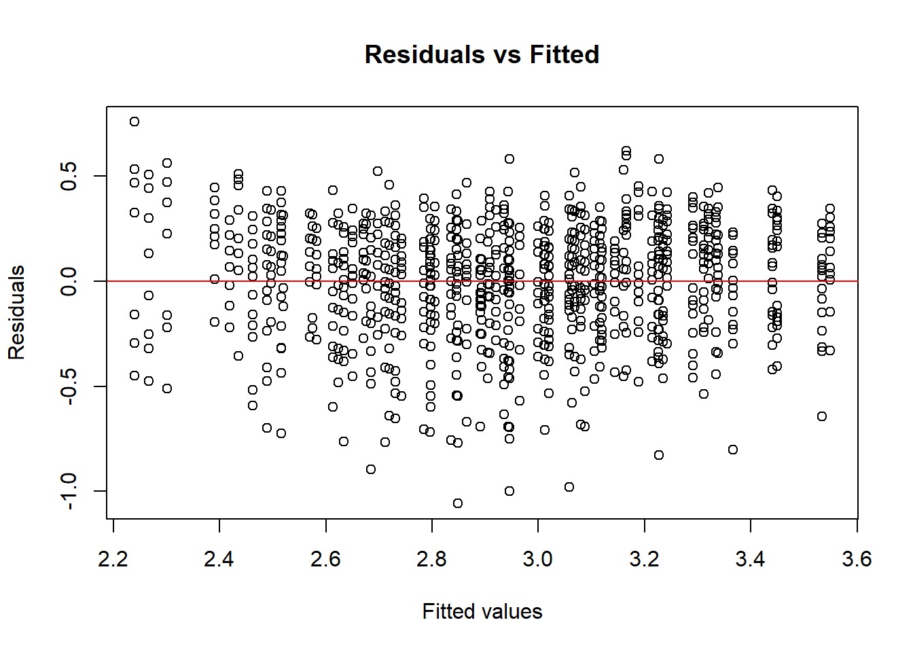
Log Transformation fixed normality assumption.
Normality in Residuals
qqnorm(residuals_log)
qqline(residuals_log, col = "red")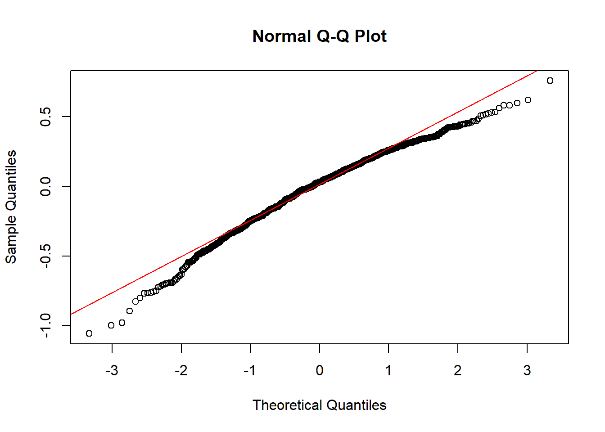
Quantiles from log transformation don’t fit the QQ line as well but the drastically lower AIC score indicates better model fit.
Incorporating binary variable to account for added plants after week 2
data_subset$num_plants_change <- ifelse(data_subset$WAT >= 2, 1, 0) Rerunning best model with binary variable
mem_log_adjusted <- glmmTMB(log(Height) ~ Treatment * WAT + num_plants_change + (1 | Plot) + (1 | Field), data = data_subset)Model Diagnostics
AIC(mem_log_adjusted)[1] 212.6285AIC with of model with binary variable is slightly lower then without (~2 points lower)
summary(mem_log_adjusted) Family: gaussian ( identity )
Formula:
log(Height) ~ Treatment * WAT + num_plants_change + (1 | Plot) +
(1 | Field)
Data: data_subset
AIC BIC logLik deviance df.resid
212.6 253.1 -98.3 196.6 1158
Random effects:
Conditional model:
Groups Name Variance Std.Dev.
Plot (Intercept) 0.008955 0.09463
Field (Intercept) 0.035003 0.18709
Residual 0.066224 0.25734
Number of obs: 1166, groups: Plot, 20; Field, 3
Dispersion estimate for gaussian family (sigma^2): 0.0662
Conditional model:
Estimate Std. Error z value Pr(>|z|)
(Intercept) 2.325784 0.116348 19.990 < 2e-16 ***
Treatment1 0.072868 0.059427 1.226 0.220
WAT 0.263623 0.012323 21.393 < 2e-16 ***
num_plants_change -0.171054 0.028839 -5.931 3.01e-09 ***
Treatment1:WAT -0.007487 0.014548 -0.515 0.607
---
Signif. codes: 0 '***' 0.001 '**' 0.01 '*' 0.05 '.' 0.1 ' ' 1Model Diagnostics
Extracting model residuals
residuals_adj <- resid(mem_log_adjusted)
fitted_adj <- fitted(mem_log_adjusted)
# Plot residuals vs fitted values
plot(fitted_adj, residuals_adj, xlab = "Fitted values", ylab = "Residuals",
main = "Residuals vs Fitted")
abline(h = 0, col = "red")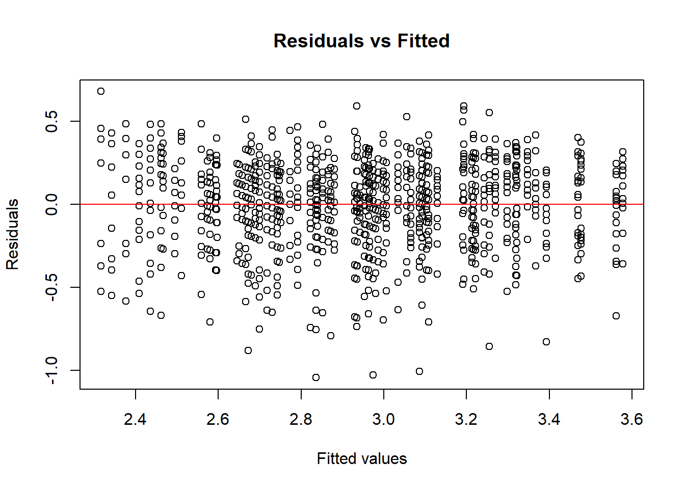
Normality in Residuals
qqnorm(residuals_adj)
qqline(residuals_adj, col = "red")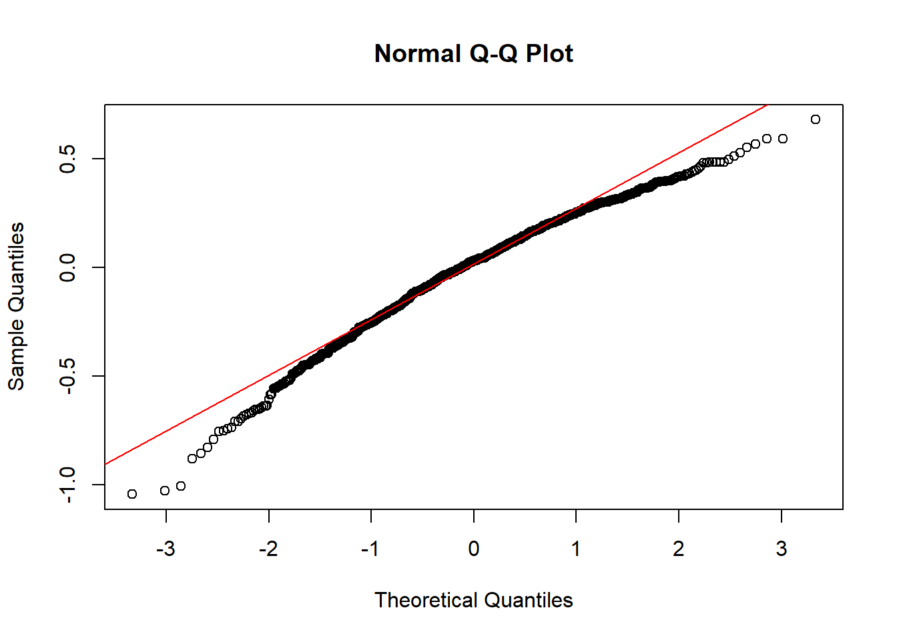